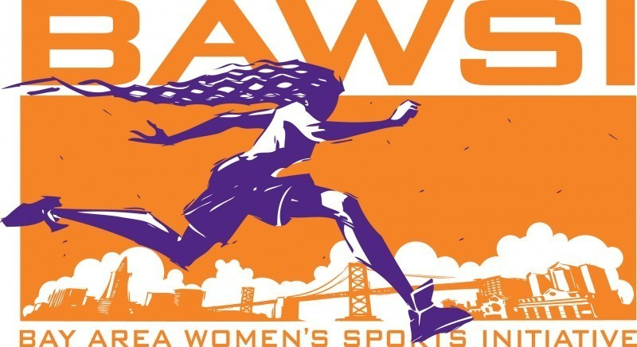

 The Bay Area Women's Sports Initiative (BAWSI) si a public benefit, nonprofit corporation with a mission to create programs and partnerships through which women athletes bring health, hope and wholeness to our community. Founded in 2005 by Olympic and World Cup soccer stars Brandi Chastain and Julie Foudy and Marlene Bjornsrud, former general manager of the San Jose CyberRays women's professional soccer team, BAWSI provides a meaningful path for women athletes to become a more visible and valued part of the Bay Area sports culture.
BAESI's history
The concept of BAWSI was inspired by one of the most spectacular achievements in women's sports history and born out of one its biggest disappointments...